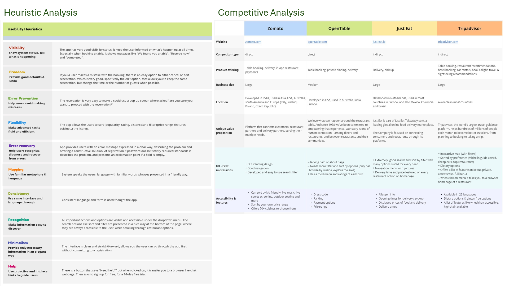
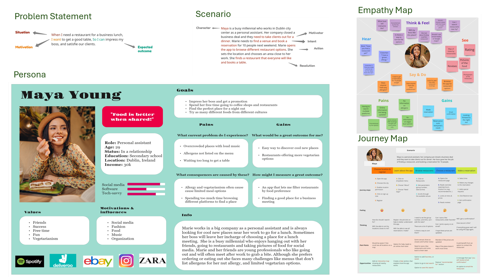
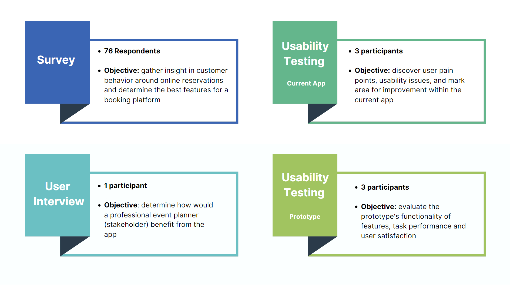

Dine Hub

Introduction
Based on UX research findings, I redesigned the restaurant reservation mobile application, ReserveOut. The number of restaurant recommendation service apps is increasing, and new content is added daily. Online reservations offer customers enhanced convenience, greater control, and a more consistent and reliable user experience. The growth of the mobile app market has popularized the display and access of relevant restaurant information. This study aims to identify the significant pain points users experience when using the ReserveOut application and how these contribute to UX issues and low customer loyalty. This research includes qualitative and quantitative methods, providing insights and ideas for a redesign. I will use usability testing to track users' experiences with the app and the obstacles they encounter when making a reservation. Additionally, I will employ quantitative research techniques to understand better customers' experiences with the brand and the challenges they face when booking a reservation..

Heauristic & Competitive Analysis
Heuristic analysis was used to measure the usability of user interfaces and reveal insights that can help enhance product usability early in the development stage. I identified several critical food reservation and delivery platform features through competitor analysis. I determined each competitor’s business size, product offering, unique value proposition, UX, first impressions, and accessibility features. The comparison gave me an idea of the features users would expect from a restaurant reservations application.

Target User
By creating a persona and a scenario, I could better understand what a real person's needs might be. Going forward with the project, I used the persona to help me better understand the target audience and define users' pain points. I decided to do a scenario to remember always to keep the user in the centre of the design and to ensure that any further development process done in this project directly contributes to my user's goal. In the journey map, I focused on what my persona was doing, thinking, feeling, and their frustrations. The part I want to draw attention to is the opportunities section, where I explored potential solutions to our user's pain points. Going through the process of finding a restaurant using my persona, I was able to understand better the thought process of people who make table reservations when eating out. Specifically, to examined their approach and identified the pain points they encountered, allowing me to address these issues and develop solutions during the application redesign.

Results & Analysis
To gather qualitative data and user insights, survey questions were focused on to help identify users' pain points and discover the issues they're experiencing while using restaurant reservations and food delivery platforms. The survey has 22 questions, divided into categories for a specific part of the app. The survey is divided into categories focusing on different parts of the app. It starts with demographic data, followed by questions about dining out, making reservations, and ordering delivery to assess the need for the product. To understand our target audience, I conducted a user interview to gather qualitative data on user pain points, aiming to alleviate them and improve the overall UX. The objective was to determine how one professional event planner (stakeholder) would benefit from the application. Two usability tests were conducted: one on the current application and one on the new prototype. The test script, consent form, and SUS (System Usability Scale) questionnaire were prepared in advance. Participants performed specific tasks while data was collected to identify prototype flaws and document areas for improvement.

Digital Prototype
Online food ordering services have grown in popularity and transformed the restaurant industry by offering new opportunities and more straightforward, accessible ordering options. While many platforms provide these services, they often focus on a single service or specific area. The redesigned platform, now called Dine Hub, offers table reservations, food delivery, and pickup options. The new system will allow users to quickly and easily find the information they need by selecting information that meets their needs and preferences. The primary focus of the digital prototype was on booking table reservations. The application redesign aimed to create a comprehensive platform with an advanced search and filter system that enhances search performance through personalization. This new personalized recommendation system boosts satisfaction and fosters customer loyalty.


Conclusion & Reflection
User research techniques, including surveys, interviews, and usability testing, significantly influenced the prototype and final design. Testing the original app and the interactive prototype allowed for a human-centred design approach, resulting in users' preferred solution. The qualitative and quantitative user research had the most significant impact on my prototype and the final design. It allowed me to design specifically for the user and to minimize the impact of my own biases on the product. A deep understanding of user behaviour allowed me to identify and prioritize the best features and practices for a redesign.
Read full case study on Medium:
View Case Study